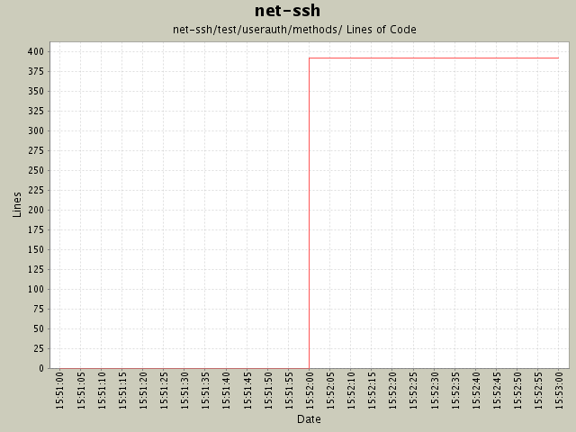

Summary Period: 2004-11-22 to 2004-11-22
[root]/net-ssh/test/userauth/methods

Total Lines Of Code:
392 (2005-01-07 15:12)
| Author | Changes | Lines of Code | Lines per Change |
|---|---|---|---|
| minam | 3 (100.0%) | 392 (100.0%) | 130.6 |
Initial revision
392 lines of code changed in:
Generated by StatCVS 0.2.3